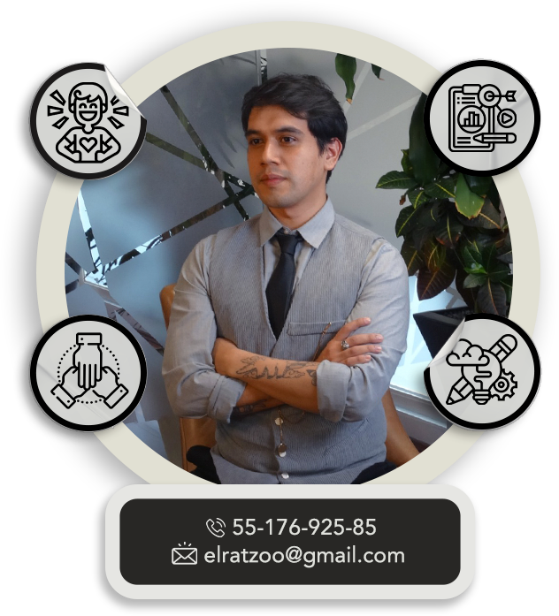
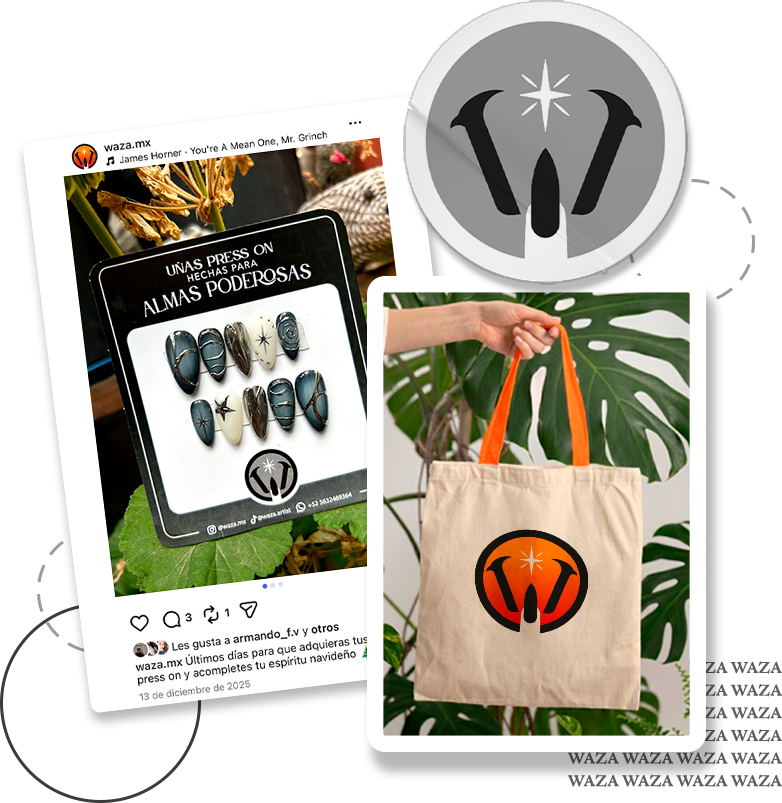
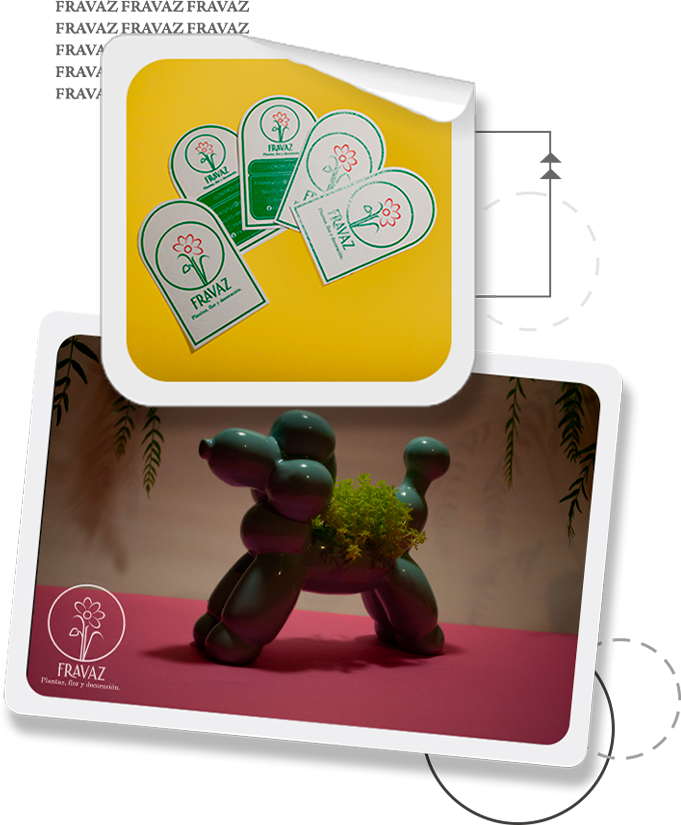
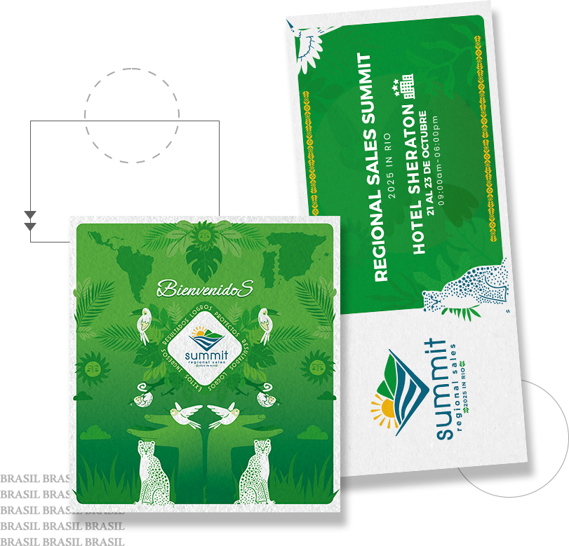
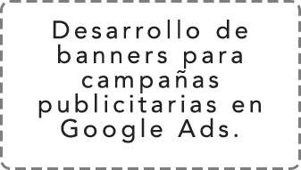
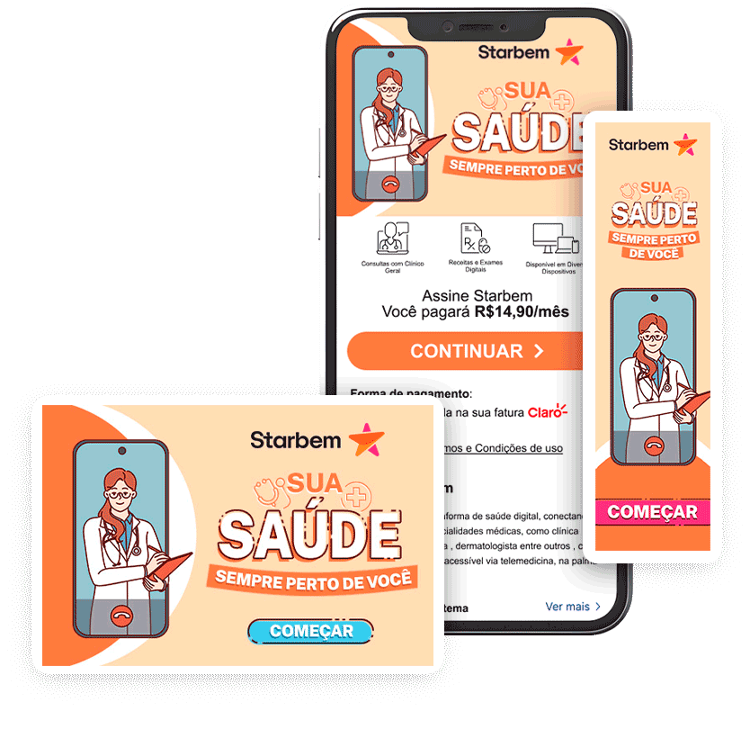
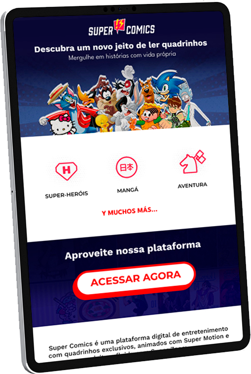
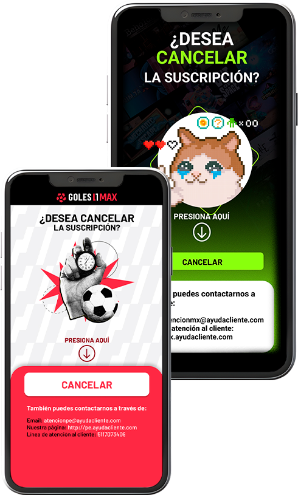
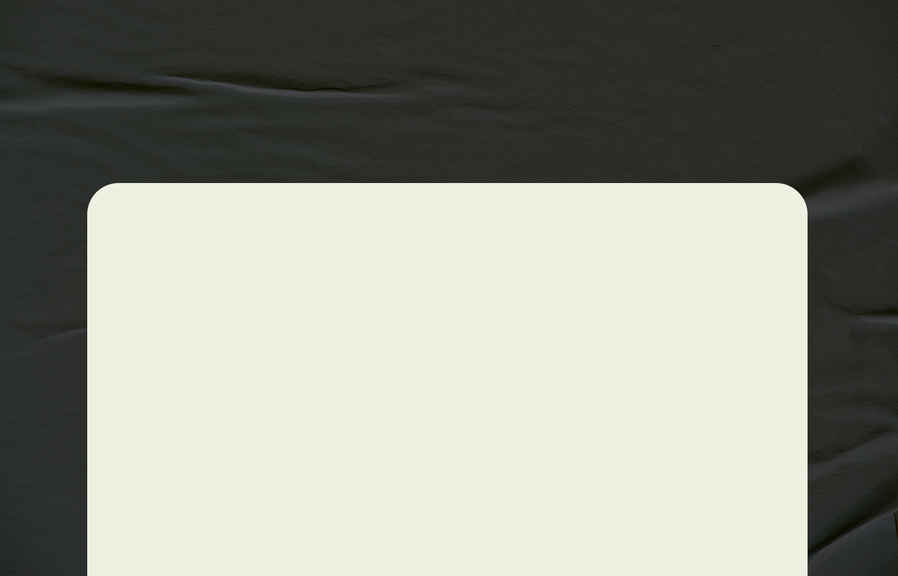
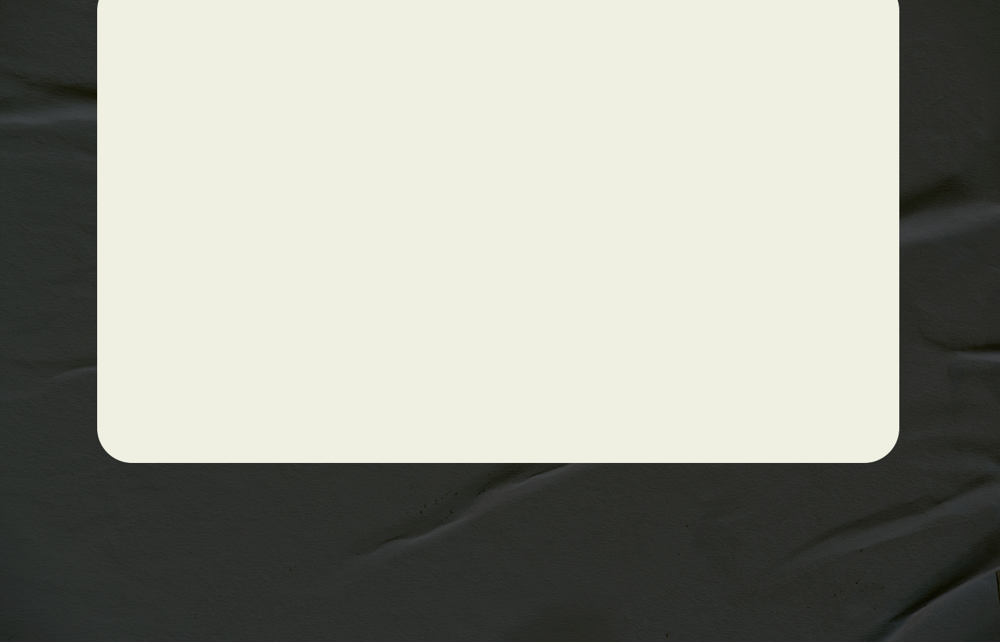

Soy diseñador en comunicación visual con enfoque en proyectos digitales y corporativos. Desarrollo soluciones visuales claras y funcionales, alineadas a identidad de marca y objetivos de comunicación.
He participado en proyectos regionales para distintos países de LATAM, integrando motion graphics, diseño web y sistemas gráficos dentro de una misma narrativa visual.


Fue un trabajo de creación de identidad gráfica realizado para un negocio de uñas Press On en CDMX.

Realicé la identidad gráfica de un emprendimiento de línea floral, así como el manejo de sus redes sociales.

Realicé la identidad gráfica de un evento corporativo internacional que se realizó en Brasil en el 2025.
Realicé y repliqué flujos de suscripción para servicios nacionales e internacionales, para operadoras móviles.



Realicé material web en código, HTML y CSS para crear y modificar index y websites.
Realicé y repliqué flujos de suscripción para servicios nacionales e internacionales, para operadoras móviles.


